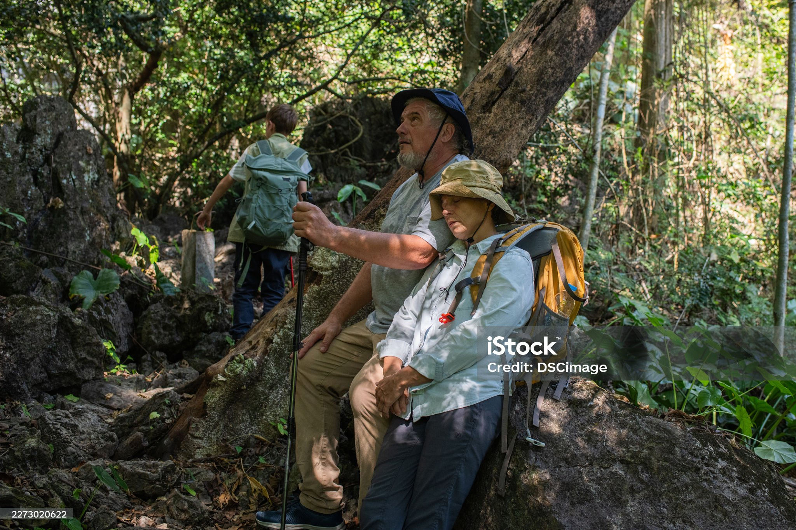

Guided Low-Impact Hiking
Traverse pristine mountain forest corridors and high ridge lines accompanied by experienced local naturalists. Learn tracking techniques, identify regional flora, and master the art of zero-footprint wilderness travel.